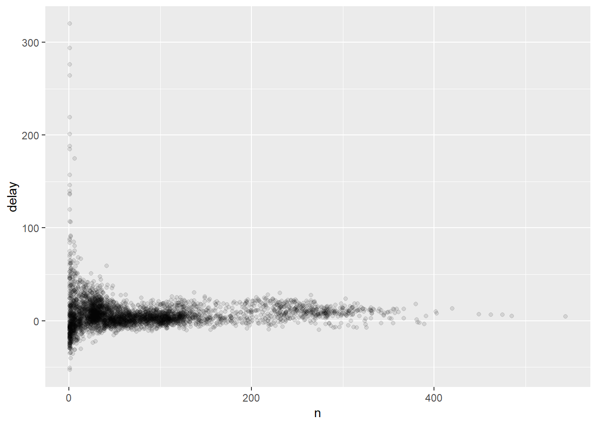
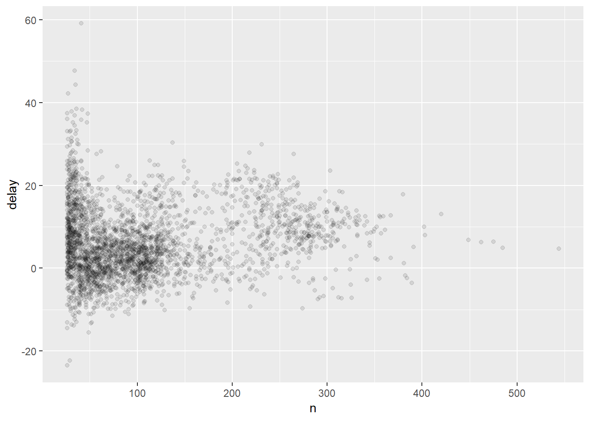

This markdown is part of a series that serves as a condensed help guide that I use to explore R and the tidyverse packages as I work through R for Data Science, available here.
First, we install/load the relevant packages by installing the tidyverse. This “package” effectively contains all packages developed by the Hadley Wickham:
if (!require("tidyverse")) install.packages("tidyverse")
library("tidyverse")In this chapter we use an additional dataset that are installed in the form of packages…
if (!require("nycflights13")) install.packages("nycflights13")
library("nycflights13")In this chapter we will work primarily with the dplyr package, but we load the entire tidyverse anyway because it’s easy.
The dplyr package works really well with a data object called a tibble. Essentially, a tibble is a nicely printable version of a data frame. Tibbles are data frames, but slightly tweaked to work better in the tidyverse. For now, you don’t need to worry about the differences; we’ll come back to tibbles in more detail in the Data Wrangle chapter.
When viewing a tibble, these are the common data types in the columns you’ll come across:
int – integers
dbl – doubles, or real numbers
chr – character vectors or strings
dttm – date-times
lgl – logicals/booleans -> TRUE or FALSE
fctr – factor: which R uses to represent categorical variables with fixed possible values
date – Dates
When working with a tibble or a data.frame in dplyr, the following data data verbs are most commonly used for wrangling data:
filter() – picking observations by their values
arrange() – order your table by rows
select() – pick variables by their names (by column)
mutate() – create new variables with functions based on existing variables
summarise() – collapse many variables down into a single summary
group_by() – this verb is used in conjunction with the above. It changes the scope of each function from operating on the entire dataset to operating on it group-by-group.
filter() can take the following comparison operators: >, >=, <, <=, != (not equal), and == (tests if equal to).
filter() can also accomodate logical operators: & is “andâ€, | is “orâ€, ! is “not†and %in% locates in a vector or concatenation. Sometimes you can simplify complicated subsetting by remembering De Morgan’s law: !(x & y) is the same as !x | !y, and !(x | y) is the same as !x & !y.
filter() also handles NA’s. You can filter NA’s with the is.na() function.
filter() can also be used in conjunction with between() which is a shortcut for x >= left & x <= right, implemented efficiently in C++ for local values, and translated to the appropriate SQL syntax for remote tables.
filter() only includes rows where the condition is TRUE; it excludes both FALSE and NA values. If you want to preserve missing values, ask for them explicitly, as in the example below:
df <- tibble(x = c(1, NA, 3))
filter(df, x > 1)## # A tibble: 1 x 1
## x
## <dbl>
## 1 3filter(df, is.na(x) | x > 1)## # A tibble: 2 x 1
## x
## <dbl>
## 1 NA
## 2 3This orders the rows in a tibble. As more column names are provided, each additional column is used to break ties found in preceding columns. Use this verb in conjunction with desc() to sort in descending order.
select() allows you to rapidly zoom in on a useful subset using operations based on the names of the variables. Here are a few examples:
# Select columns by name
select(flights, year, month, day)## # A tibble: 336,776 x 3
## year month day
## <int> <int> <int>
## 1 2013 1 1
## 2 2013 1 1
## 3 2013 1 1
## 4 2013 1 1
## 5 2013 1 1
## 6 2013 1 1
## 7 2013 1 1
## 8 2013 1 1
## 9 2013 1 1
## 10 2013 1 1
## # ... with 336,766 more rows# Select all columns between year and day (inclusive)
select(flights, year:day)## # A tibble: 336,776 x 3
## year month day
## <int> <int> <int>
## 1 2013 1 1
## 2 2013 1 1
## 3 2013 1 1
## 4 2013 1 1
## 5 2013 1 1
## 6 2013 1 1
## 7 2013 1 1
## 8 2013 1 1
## 9 2013 1 1
## 10 2013 1 1
## # ... with 336,766 more rows# Select all columns except those from year to day (inclusive)
select(flights, -(year:day))## # A tibble: 336,776 x 16
## dep_time sched_dep_time dep_delay arr_time sched_arr_time arr_delay
## <int> <int> <dbl> <int> <int> <dbl>
## 1 517 515 2 830 819 11
## 2 533 529 4 850 830 20
## 3 542 540 2 923 850 33
## 4 544 545 -1 1004 1022 -18
## 5 554 600 -6 812 837 -25
## 6 554 558 -4 740 728 12
## 7 555 600 -5 913 854 19
## 8 557 600 -3 709 723 -14
## 9 557 600 -3 838 846 -8
## 10 558 600 -2 753 745 8
## # ... with 336,766 more rows, and 10 more variables: carrier <chr>,
## # flight <int>, tailnum <chr>, origin <chr>, dest <chr>, air_time <dbl>,
## # distance <dbl>, hour <dbl>, minute <dbl>, time_hour <dttm>There are also a couple of helper functions that can be used within select():
starts_with("abc") – matches names that begin with “abcâ€.
ends_with("xyz") – matches names that end with “xyzâ€.
contains("ijk") – matches names that contain “ijkâ€.
matches("(.)\\1") – selects variables that match a regular expression (more on this later).
num_range("x", 1:3) – matches x1, x2 and x3.
mutate() always adds new columns at the end of your dataset. Here is an example with a thinner dataset:
flights_sml <- select(flights,
year:day,
ends_with("delay"),
distance,
air_time
)
mutate(flights_sml,
gain = dep_delay - arr_delay,
speed = distance / air_time * 60
)## # A tibble: 336,776 x 9
## year month day dep_delay arr_delay distance air_time gain speed
## <int> <int> <int> <dbl> <dbl> <dbl> <dbl> <dbl> <dbl>
## 1 2013 1 1 2 11 1400 227 -9 370.
## 2 2013 1 1 4 20 1416 227 -16 374.
## 3 2013 1 1 2 33 1089 160 -31 408.
## 4 2013 1 1 -1 -18 1576 183 17 517.
## 5 2013 1 1 -6 -25 762 116 19 394.
## 6 2013 1 1 -4 12 719 150 -16 288.
## 7 2013 1 1 -5 19 1065 158 -24 404.
## 8 2013 1 1 -3 -14 229 53 11 259.
## 9 2013 1 1 -3 -8 944 140 5 405.
## 10 2013 1 1 -2 8 733 138 -10 319.
## # ... with 336,766 more rowsNote that you can refer to columns that you’ve just created:
mutate(flights_sml,
gain = dep_delay - arr_delay,
hours = air_time / 60,
gain_per_hour = gain / hours
)## # A tibble: 336,776 x 10
## year month day dep_delay arr_delay distance air_time gain hours
## <int> <int> <int> <dbl> <dbl> <dbl> <dbl> <dbl> <dbl>
## 1 2013 1 1 2 11 1400 227 -9 3.78
## 2 2013 1 1 4 20 1416 227 -16 3.78
## 3 2013 1 1 2 33 1089 160 -31 2.67
## 4 2013 1 1 -1 -18 1576 183 17 3.05
## 5 2013 1 1 -6 -25 762 116 19 1.93
## 6 2013 1 1 -4 12 719 150 -16 2.5
## 7 2013 1 1 -5 19 1065 158 -24 2.63
## 8 2013 1 1 -3 -14 229 53 11 0.883
## 9 2013 1 1 -3 -8 944 140 5 2.33
## 10 2013 1 1 -2 8 733 138 -10 2.3
## # ... with 336,766 more rows, and 1 more variable: gain_per_hour <dbl>If you only want to keep the new variables, use transmute():
transmute(flights,
gain = dep_delay - arr_delay,
hours = air_time / 60,
gain_per_hour = gain / hours
)## # A tibble: 336,776 x 3
## gain hours gain_per_hour
## <dbl> <dbl> <dbl>
## 1 -9 3.78 -2.38
## 2 -16 3.78 -4.23
## 3 -31 2.67 -11.6
## 4 17 3.05 5.57
## 5 19 1.93 9.83
## 6 -16 2.5 -6.4
## 7 -24 2.63 -9.11
## 8 11 0.883 12.5
## 9 5 2.33 2.14
## 10 -10 2.3 -4.35
## # ... with 336,766 more rowsThere are many functions for creating new variables that you can use with mutate(). There’s no way to list every possible function that you might use, but here’s a selection of functions that are frequently useful:
Arithmetic operators: +, -, *, /, ^. These are also useful with aggregate functions like x / sum(x) or y - mean(y).
Modular arithmetic: %/% (integer division) and %% (remainder), where x == y * (x %/% y) + (x %% y). Modular arithmetic is a handy tool because it allows you to break integers up into pieces. For example, in the flights dataset, you can compute hour and minute from dep_time with:
transmute(flights,
dep_time,
hour = dep_time %/% 100,
minute = dep_time %% 100
)## # A tibble: 336,776 x 3
## dep_time hour minute
## <int> <dbl> <dbl>
## 1 517 5 17
## 2 533 5 33
## 3 542 5 42
## 4 544 5 44
## 5 554 5 54
## 6 554 5 54
## 7 555 5 55
## 8 557 5 57
## 9 557 5 57
## 10 558 5 58
## # ... with 336,766 more rowsLogs: log(), log2(), log10(). These are useful transformations.
Offsets: lead() and lag() allow you to refer to leading or lagging values. This allows you to compute running differences (e.g. x - lag(x)) or find when values change (x != lag(x)). They are most useful in conjunction with group_by().
Cumulative and rolling aggregates: From base R, the following functions run cumulative sums, products, mins and maxes respectively: cumsum(), cumprod(), cummin() and cummax. dplyr provides cummean(). Finally, the RcppRoll package can provide rolling aggregates.
Logical comparisons: <, <=, >, >=, !=.
Ranking: Many types of ranking functions exist, but min_rank() and desc() are good ones to start with. See also row_number(), dense_rank(), percent_rank(), cume_dist(), ntile().
This data verb collapses a data frame into a single row.
summarise(flights, delay = mean(dep_delay, na.rm = TRUE))## # A tibble: 1 x 1
## delay
## <dbl>
## 1 12.6summarise() is not terribly useful unless we pair it with group_by(). Adding group_by() changes the unit of analysis from the complete dataset to individual groups. Here is an example where flights are grouped by day, and the average departure time is calculated.
by_day <- group_by(flights, year, month, day)
summarise(by_day, delay = mean(dep_delay, na.rm = TRUE))## # A tibble: 365 x 4
## # Groups: year, month [?]
## year month day delay
## <int> <int> <int> <dbl>
## 1 2013 1 1 11.5
## 2 2013 1 2 13.9
## 3 2013 1 3 11.0
## 4 2013 1 4 8.95
## 5 2013 1 5 5.73
## 6 2013 1 6 7.15
## 7 2013 1 7 5.42
## 8 2013 1 8 2.55
## 9 2013 1 9 2.28
## 10 2013 1 10 2.84
## # ... with 355 more rowsAt this point it would be useful to read the short sections on combining operations with the pipe operator and missing values, also in this chapter.
The nice thing about summarise() is that you can add multiple summaries within the same function:
flights %>%
group_by(dest) %>%
summarise(
count = n(),
dist = mean(distance, na.rm = TRUE),
delay = mean(arr_delay, na.rm = TRUE)
) %>%
filter(count > 20, dest != "HNL")## # A tibble: 96 x 4
## dest count dist delay
## <chr> <int> <dbl> <dbl>
## 1 ABQ 254 1826 4.38
## 2 ACK 265 199 4.85
## 3 ALB 439 143 14.4
## 4 ATL 17215 757. 11.3
## 5 AUS 2439 1514. 6.02
## 6 AVL 275 584. 8.00
## 7 BDL 443 116 7.05
## 8 BGR 375 378 8.03
## 9 BHM 297 866. 16.9
## 10 BNA 6333 758. 11.8
## # ... with 86 more rowsWhenever you do any aggregation, it’s always a good idea to include either a count (n()), or a count of non-missing values (sum(!is.na(x))). This way you can check that you’re not drawing conclusions based on very small amounts of data. Here is a quick example of what such an implementation would look like:
# Remove missing values
not_cancelled <- flights %>%
filter(!is.na(dep_delay), !is.na(arr_delay))
# Create counts and summaries of the data (average dealy by tail number vs the count of tail numbers per average delay)
delays <-
not_cancelled %>%
group_by(tailnum) %>%
summarise(
delay = mean(arr_delay, na.rm = TRUE),
n = n()
)
# Plot the summarised data
ggplot(data = delays, mapping = aes(x = n, y = delay)) +
geom_point(alpha = 1/10)
Sometimes with these plots you want to subset the data to see if more of a pattern exists. The following snippet of code shows a nice way of integrating a chart into the piping functionality:
delays %>%
filter(n > 25) %>%
ggplot(mapping = aes(x = n, y = delay)) +
geom_point(alpha = 1/10)
Just using means, counts, and sum can get you a long way, but R provides many other useful summary functions:
mean(), median() is also useful. It’s sometimes useful to combine aggregation with logical subsetting:not_cancelled %>%
group_by(year, month, day) %>%
summarise(
avg_delay1 = mean(arr_delay),
avg_delay2 = mean(arr_delay[arr_delay > 0]) # the average positive delay
)## # A tibble: 365 x 5
## # Groups: year, month [?]
## year month day avg_delay1 avg_delay2
## <int> <int> <int> <dbl> <dbl>
## 1 2013 1 1 12.7 32.5
## 2 2013 1 2 12.7 32.0
## 3 2013 1 3 5.73 27.7
## 4 2013 1 4 -1.93 28.3
## 5 2013 1 5 -1.53 22.6
## 6 2013 1 6 4.24 24.4
## 7 2013 1 7 -4.95 27.8
## 8 2013 1 8 -3.23 20.8
## 9 2013 1 9 -0.264 25.6
## 10 2013 1 10 -5.90 27.3
## # ... with 355 more rowsMeasures of spread: The root mean squared deviation, or standard deviation sd(), The interquartile range IQR() and median absolute deviation mad(x)
Measures of rank:: min(x), quantile(x, 0.25), max(x). Quantiles are a generalisation of the median. For example, quantile(x, 0.25) will find a value of x that is greater than 25% of the values, and less than the remaining 75%.
Measures of position: first(x), nth(x, 2), last(x). These work similarly to x[1], x[2], and x[length(x)] but let you set a default value if that position does not exist (i.e. you’re trying to get the 3rd element from a group that only has two elements). For example, we can find the first and last departure for each day:
not_cancelled %>%
group_by(year, month, day) %>%
summarise(
first_dep = first(dep_time),
last_dep = last(dep_time)
)## # A tibble: 365 x 5
## # Groups: year, month [?]
## year month day first_dep last_dep
## <int> <int> <int> <int> <int>
## 1 2013 1 1 517 2356
## 2 2013 1 2 42 2354
## 3 2013 1 3 32 2349
## 4 2013 1 4 25 2358
## 5 2013 1 5 14 2357
## 6 2013 1 6 16 2355
## 7 2013 1 7 49 2359
## 8 2013 1 8 454 2351
## 9 2013 1 9 2 2252
## 10 2013 1 10 3 2320
## # ... with 355 more rowsnot_cancelled %>%
group_by(year, month, day) %>%
summarise(
first_dep = first(dep_time),
last_dep = last(dep_time)
)## # A tibble: 365 x 5
## # Groups: year, month [?]
## year month day first_dep last_dep
## <int> <int> <int> <int> <int>
## 1 2013 1 1 517 2356
## 2 2013 1 2 42 2354
## 3 2013 1 3 32 2349
## 4 2013 1 4 25 2358
## 5 2013 1 5 14 2357
## 6 2013 1 6 16 2355
## 7 2013 1 7 49 2359
## 8 2013 1 8 454 2351
## 9 2013 1 9 2 2252
## 10 2013 1 10 3 2320
## # ... with 355 more rowsn(), which takes no arguments and returns the size of the current group. Use sum(!is.na(x)) to count non-missing values and n_distinct(x) to count the number of unique values:# Which destinations have the most carriers?
not_cancelled %>%
group_by(dest) %>%
summarise(carriers = n_distinct(carrier)) %>%
arrange(desc(carriers))## # A tibble: 104 x 2
## dest carriers
## <chr> <int>
## 1 ATL 7
## 2 BOS 7
## 3 CLT 7
## 4 ORD 7
## 5 TPA 7
## 6 AUS 6
## 7 DCA 6
## 8 DTW 6
## 9 IAD 6
## 10 MSP 6
## # ... with 94 more rowsdplyr’s count() function is also extremely useful - it also does an automatic grouped count:
not_cancelled %>%
count(dest)## # A tibble: 104 x 2
## dest n
## <chr> <int>
## 1 ABQ 254
## 2 ACK 264
## 3 ALB 418
## 4 ANC 8
## 5 ATL 16837
## 6 AUS 2411
## 7 AVL 261
## 8 BDL 412
## 9 BGR 358
## 10 BHM 269
## # ... with 94 more rowsFor this count function it is also possible to provide a weight variable. For example, you could use this to “count†(sum) the total number of miles a plane flew:
not_cancelled %>%
count(tailnum, wt = distance)## # A tibble: 4,037 x 2
## tailnum n
## <chr> <dbl>
## 1 D942DN 3418
## 2 N0EGMQ 239143
## 3 N10156 109664
## 4 N102UW 25722
## 5 N103US 24619
## 6 N104UW 24616
## 7 N10575 139903
## 8 N105UW 23618
## 9 N107US 21677
## 10 N108UW 32070
## # ... with 4,027 more rowssum(x > 10),mean(y == 0). When used with numeric functions, TRUE is converted to 1 and FALSE to 0. This makes sum() and mean() very useful: sum(x) gives the number of TRUEs in x, and mean(x) gives the proportion.# How many flights left before 5am? (these usually indicate delayed
# flights from the previous day)
not_cancelled %>%
group_by(year, month, day) %>%
summarise(n_early = sum(dep_time < 500))## # A tibble: 365 x 4
## # Groups: year, month [?]
## year month day n_early
## <int> <int> <int> <int>
## 1 2013 1 1 0
## 2 2013 1 2 3
## 3 2013 1 3 4
## 4 2013 1 4 3
## 5 2013 1 5 3
## 6 2013 1 6 2
## 7 2013 1 7 2
## 8 2013 1 8 1
## 9 2013 1 9 3
## 10 2013 1 10 3
## # ... with 355 more rows# What proportion of flights are delayed by more than an hour?
not_cancelled %>%
group_by(year, month, day) %>%
summarise(hour_perc = mean(arr_delay > 60))## # A tibble: 365 x 4
## # Groups: year, month [?]
## year month day hour_perc
## <int> <int> <int> <dbl>
## 1 2013 1 1 0.0722
## 2 2013 1 2 0.0851
## 3 2013 1 3 0.0567
## 4 2013 1 4 0.0396
## 5 2013 1 5 0.0349
## 6 2013 1 6 0.0470
## 7 2013 1 7 0.0333
## 8 2013 1 8 0.0213
## 9 2013 1 9 0.0202
## 10 2013 1 10 0.0183
## # ... with 355 more rowsWhen you group by multiple variables, each summary peels off one level of the grouping. That makes it easy to progressively roll up a dataset:
daily <- group_by(flights, year, month, day)
(per_day <- summarise(daily, flights = n()))## # A tibble: 365 x 4
## # Groups: year, month [?]
## year month day flights
## <int> <int> <int> <int>
## 1 2013 1 1 842
## 2 2013 1 2 943
## 3 2013 1 3 914
## 4 2013 1 4 915
## 5 2013 1 5 720
## 6 2013 1 6 832
## 7 2013 1 7 933
## 8 2013 1 8 899
## 9 2013 1 9 902
## 10 2013 1 10 932
## # ... with 355 more rows(per_month <- summarise(per_day, flights = sum(flights)))## # A tibble: 12 x 3
## # Groups: year [?]
## year month flights
## <int> <int> <int>
## 1 2013 1 27004
## 2 2013 2 24951
## 3 2013 3 28834
## 4 2013 4 28330
## 5 2013 5 28796
## 6 2013 6 28243
## 7 2013 7 29425
## 8 2013 8 29327
## 9 2013 9 27574
## 10 2013 10 28889
## 11 2013 11 27268
## 12 2013 12 28135(per_year <- summarise(per_month, flights = sum(flights)))## # A tibble: 1 x 2
## year flights
## <int> <int>
## 1 2013 336776Be careful when progressively rolling up summaries: it’s OK for sums and counts, but you need to think about weighting means and variances, and it’s not possible to do it exactly for rank-based statistics like the median. In other words, the sum of groupwise sums is the overall sum, but the median of groupwise medians is not the overall median.
If you need to remove grouping, and return to operations on ungrouped data, use ungroup().
daily %>%
ungroup() %>% # no longer grouped by date
summarise(flights = n()) # all flights## # A tibble: 1 x 1
## flights
## <int>
## 1 336776Grouping is most useful in conjunction with summarise(), but you can also do convenient operations with mutate() and filter():
flights_sml %>%
group_by(year, month, day) %>%
filter(rank(desc(arr_delay)) < 10)## # A tibble: 3,306 x 7
## # Groups: year, month, day [365]
## year month day dep_delay arr_delay distance air_time
## <int> <int> <int> <dbl> <dbl> <dbl> <dbl>
## 1 2013 1 1 853 851 184 41
## 2 2013 1 1 290 338 1134 213
## 3 2013 1 1 260 263 266 46
## 4 2013 1 1 157 174 213 60
## 5 2013 1 1 216 222 708 121
## 6 2013 1 1 255 250 589 115
## 7 2013 1 1 285 246 1085 146
## 8 2013 1 1 192 191 199 44
## 9 2013 1 1 379 456 1092 222
## 10 2013 1 2 224 207 550 94
## # ... with 3,296 more rowspopular_dests <- flights %>%
group_by(dest) %>%
filter(n() > 365)
popular_dests## # A tibble: 332,577 x 19
## # Groups: dest [77]
## year month day dep_time sched_dep_time dep_delay arr_time
## <int> <int> <int> <int> <int> <dbl> <int>
## 1 2013 1 1 517 515 2 830
## 2 2013 1 1 533 529 4 850
## 3 2013 1 1 542 540 2 923
## 4 2013 1 1 544 545 -1 1004
## 5 2013 1 1 554 600 -6 812
## 6 2013 1 1 554 558 -4 740
## 7 2013 1 1 555 600 -5 913
## 8 2013 1 1 557 600 -3 709
## 9 2013 1 1 557 600 -3 838
## 10 2013 1 1 558 600 -2 753
## # ... with 332,567 more rows, and 12 more variables: sched_arr_time <int>,
## # arr_delay <dbl>, carrier <chr>, flight <int>, tailnum <chr>,
## # origin <chr>, dest <chr>, air_time <dbl>, distance <dbl>, hour <dbl>,
## # minute <dbl>, time_hour <dttm>popular_dests %>%
filter(arr_delay > 0) %>%
mutate(prop_delay = arr_delay / sum(arr_delay)) %>%
select(year:day, dest, arr_delay, prop_delay)## # A tibble: 131,106 x 6
## # Groups: dest [77]
## year month day dest arr_delay prop_delay
## <int> <int> <int> <chr> <dbl> <dbl>
## 1 2013 1 1 IAH 11 0.000111
## 2 2013 1 1 IAH 20 0.000201
## 3 2013 1 1 MIA 33 0.000235
## 4 2013 1 1 ORD 12 0.0000424
## 5 2013 1 1 FLL 19 0.0000938
## 6 2013 1 1 ORD 8 0.0000283
## 7 2013 1 1 LAX 7 0.0000344
## 8 2013 1 1 DFW 31 0.000282
## 9 2013 1 1 ATL 12 0.0000400
## 10 2013 1 1 DTW 16 0.000116
## # ... with 131,096 more rowsFunctions that work most naturally in grouped mutates and filters are known as window functions (vs. the summary functions used for summaries). You can learn more about useful window functions in the corresponding vignette: vignette("window-functions").